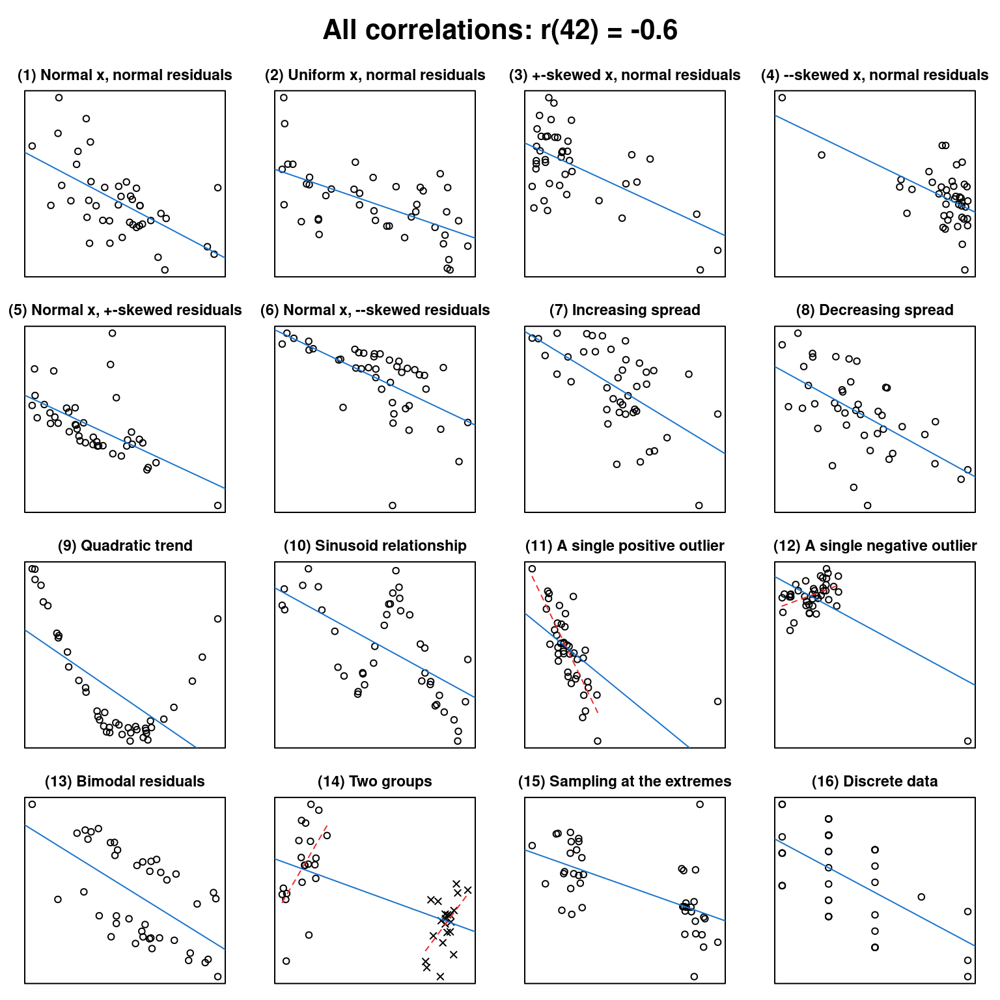
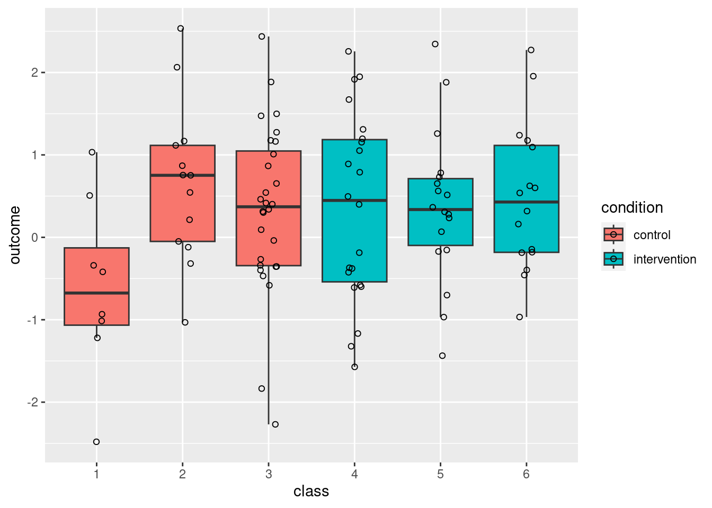
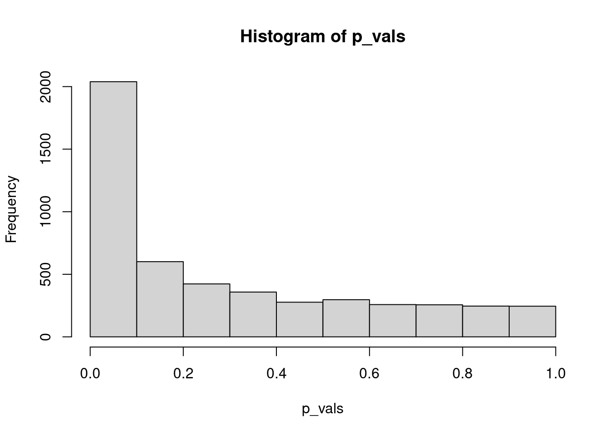

install.packages("devtools")Introducing cannonball - Tools for teaching statistics
cannonball
R
teaching materials
I’ve put my first R package on GitHub! It’s called cannonball and contains a couple of functions that I use for teaching; perhaps others will follow. # Installation Make sure you have the devtools package:
Then load it and install cannonball:
library(devtools)
install_github("janhove/cannonball")To use it, load the package as per usual:
library(cannonball)Overview of the functions
plot_r(): Draw scatterplots with the same correlation coefficient
People seem to like this function from my blog post What data patterns can lie behind a correlation coefficient?. Specify the number of observations and a desired sample Pearson correlation coefficient, and out come 16 rather different looking scatterplots conforming to these criteria:
plot_r(r = -0.6, n = 42)
For more details, type in ?plot_r at the R prompt.
clustered_data(): Simulate data from a cluster-randomised experiment
Cluster-randomised experiments are experiments in which whole groups of participants (e.g., entire classes) are necessarily assigned to the same condition. If the data from such experiments are analysed as though the participants were assigned to the conditions individually (e.g., by running a t-test on the individual data points), the false positive rate can go through the roof. This function simulates data from such an experiment and allows you to specify unequal cluster sizes (via the parts_per_class parameter):
# Generate data
d <- clustered_data(ICC = 0.15, # intra-class correlation coefficient
n_per_class = c(8, 13, 28, # sizes of the control clusters
22, 18, 16), # sizes of the intervention clusters
effect = 0) # population effect size
# Plot
library(ggplot2)
ggplot(data = d,
aes(x = class,
y = outcome,
fill = condition)) +
geom_boxplot(outlier.shape = NA) +
geom_point(shape = 1,
position = position_jitter(width = 0.1, height = 0))
I mostly use this function in a simulation to illustrate the effects of clustering on p-values. With a null effect, you’d expect only 5% of the p-values to be lower than 0.05. Let’s see what happens when you analyse the individual data from a cluster-randomised experiment using a t-test:
p_vals <- replicate(5000, {
d <- clustered_data(ICC = 0.15,
n_per_class = c(8, 13, 28, 22, 18, 16),
effect = 0)
p <- t.test(outcome ~ condition, data = d)$p.value
return(p)
})
hist(p_vals)
mean(p_vals < 0.05)[1] 0.3208The false positive rate is now through the roof (32%).
Graphically checking model assumptions
See the full-fledged tutorial for these functions.
Why cannonball?
Glad you asked! Julian ‘Cannonball’ Adderley is one of my favourite alto saxophone players (check out his solos on Autumn Leaves (from around 2’03”; Somethin’ Else) or Freddie Freeloader (6’22”; Kind of Blue)!) and he was a consummate jazz educator to boot.
Software versions
Please note that I reran the code on this page on August 6, 2023.
devtools::session_info()─ Session info ───────────────────────────────────────────────────────────────
setting value
version R version 4.3.1 (2023-06-16)
os Ubuntu 22.04.3 LTS
system x86_64, linux-gnu
ui X11
language en_US
collate en_US.UTF-8
ctype en_US.UTF-8
tz Europe/Zurich
date 2023-08-27
pandoc 3.1.1 @ /usr/lib/rstudio/resources/app/bin/quarto/bin/tools/ (via rmarkdown)
─ Packages ───────────────────────────────────────────────────────────────────
package * version date (UTC) lib source
cachem 1.0.6 2021-08-19 [2] CRAN (R 4.2.0)
callr 3.7.3 2022-11-02 [1] CRAN (R 4.3.1)
cannonball * 0.1.1 2023-06-21 [1] Github (janhove/cannonball@fe70eff)
cli 3.6.1 2023-03-23 [1] CRAN (R 4.3.0)
colorspace 2.1-0 2023-01-23 [1] CRAN (R 4.3.0)
crayon 1.5.2 2022-09-29 [1] CRAN (R 4.3.1)
devtools 2.4.5 2022-10-11 [1] CRAN (R 4.3.1)
digest 0.6.29 2021-12-01 [2] CRAN (R 4.2.0)
dplyr 1.1.2 2023-04-20 [1] CRAN (R 4.3.0)
ellipsis 0.3.2 2021-04-29 [2] CRAN (R 4.2.0)
evaluate 0.15 2022-02-18 [2] CRAN (R 4.2.0)
fansi 1.0.4 2023-01-22 [1] CRAN (R 4.3.1)
farver 2.1.1 2022-07-06 [1] CRAN (R 4.3.0)
fastmap 1.1.0 2021-01-25 [2] CRAN (R 4.2.0)
fs 1.5.2 2021-12-08 [2] CRAN (R 4.2.0)
generics 0.1.3 2022-07-05 [1] CRAN (R 4.3.0)
ggplot2 * 3.4.2 2023-04-03 [1] CRAN (R 4.3.0)
glue 1.6.2 2022-02-24 [2] CRAN (R 4.2.0)
gtable 0.3.3 2023-03-21 [1] CRAN (R 4.3.0)
htmltools 0.5.5 2023-03-23 [1] CRAN (R 4.3.0)
htmlwidgets 1.6.2 2023-03-17 [1] CRAN (R 4.3.1)
httpuv 1.6.11 2023-05-11 [1] CRAN (R 4.3.1)
jsonlite 1.8.7 2023-06-29 [1] CRAN (R 4.3.1)
knitr 1.39 2022-04-26 [2] CRAN (R 4.2.0)
labeling 0.4.2 2020-10-20 [1] CRAN (R 4.3.0)
later 1.3.1 2023-05-02 [1] CRAN (R 4.3.1)
lifecycle 1.0.3 2022-10-07 [1] CRAN (R 4.3.0)
magrittr 2.0.3 2022-03-30 [1] CRAN (R 4.3.0)
memoise 2.0.1 2021-11-26 [2] CRAN (R 4.2.0)
mime 0.10 2021-02-13 [2] CRAN (R 4.0.2)
miniUI 0.1.1.1 2018-05-18 [1] CRAN (R 4.3.1)
munsell 0.5.0 2018-06-12 [1] CRAN (R 4.3.0)
pillar 1.9.0 2023-03-22 [1] CRAN (R 4.3.0)
pkgbuild 1.4.2 2023-06-26 [1] CRAN (R 4.3.1)
pkgconfig 2.0.3 2019-09-22 [2] CRAN (R 4.2.0)
pkgload 1.3.2.1 2023-07-08 [1] CRAN (R 4.3.1)
prettyunits 1.1.1 2020-01-24 [2] CRAN (R 4.2.0)
processx 3.8.2 2023-06-30 [1] CRAN (R 4.3.1)
profvis 0.3.8 2023-05-02 [1] CRAN (R 4.3.1)
promises 1.2.0.1 2021-02-11 [1] CRAN (R 4.3.1)
ps 1.7.5 2023-04-18 [1] CRAN (R 4.3.1)
purrr 1.0.1 2023-01-10 [1] CRAN (R 4.3.0)
R6 2.5.1 2021-08-19 [2] CRAN (R 4.2.0)
Rcpp 1.0.11 2023-07-06 [1] CRAN (R 4.3.1)
remotes 2.4.2 2021-11-30 [2] CRAN (R 4.2.0)
rlang 1.1.1 2023-04-28 [1] CRAN (R 4.3.0)
rmarkdown 2.21 2023-03-26 [1] CRAN (R 4.3.0)
rstudioapi 0.14 2022-08-22 [1] CRAN (R 4.3.0)
scales 1.2.1 2022-08-20 [1] CRAN (R 4.3.0)
sessioninfo 1.2.2 2021-12-06 [2] CRAN (R 4.2.0)
shiny 1.7.4.1 2023-07-06 [1] CRAN (R 4.3.1)
stringi 1.7.12 2023-01-11 [1] CRAN (R 4.3.1)
stringr 1.5.0 2022-12-02 [1] CRAN (R 4.3.0)
tibble 3.2.1 2023-03-20 [1] CRAN (R 4.3.0)
tidyselect 1.2.0 2022-10-10 [1] CRAN (R 4.3.0)
urlchecker 1.0.1 2021-11-30 [1] CRAN (R 4.3.1)
usethis 2.2.2 2023-07-06 [1] CRAN (R 4.3.1)
utf8 1.2.3 2023-01-31 [1] CRAN (R 4.3.1)
vctrs 0.6.3 2023-06-14 [1] CRAN (R 4.3.0)
withr 2.5.0 2022-03-03 [2] CRAN (R 4.2.0)
xfun 0.39 2023-04-20 [1] CRAN (R 4.3.0)
xtable 1.8-4 2019-04-21 [1] CRAN (R 4.3.1)
yaml 2.3.5 2022-02-21 [2] CRAN (R 4.2.0)
[1] /home/jan/R/x86_64-pc-linux-gnu-library/4.3
[2] /usr/local/lib/R/site-library
[3] /usr/lib/R/site-library
[4] /usr/lib/R/library
──────────────────────────────────────────────────────────────────────────────